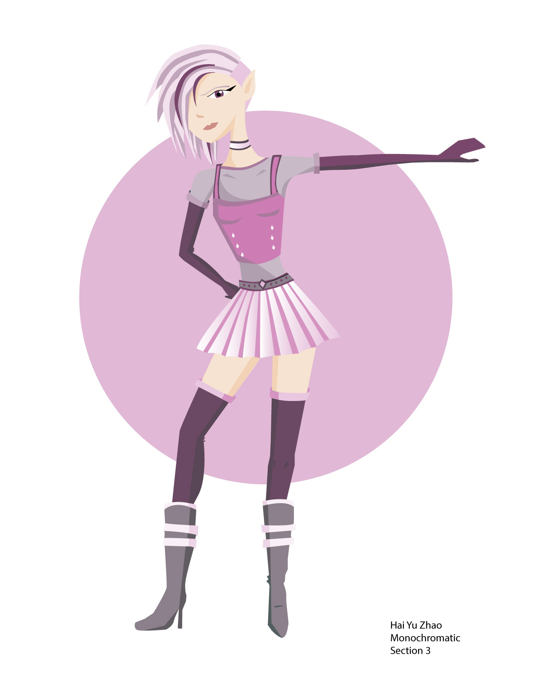

Problem:
To design an original character
Action:
I decided to create a strong female character. I gave her shorter hair with streaks of color to show defiance as well as non-conformity to traditional ideals of femininity.
Results:
A character who bends traditional binary ideals of beauty and looks like she has an interesting backstory
Tools Used:
Adobe Illustrator